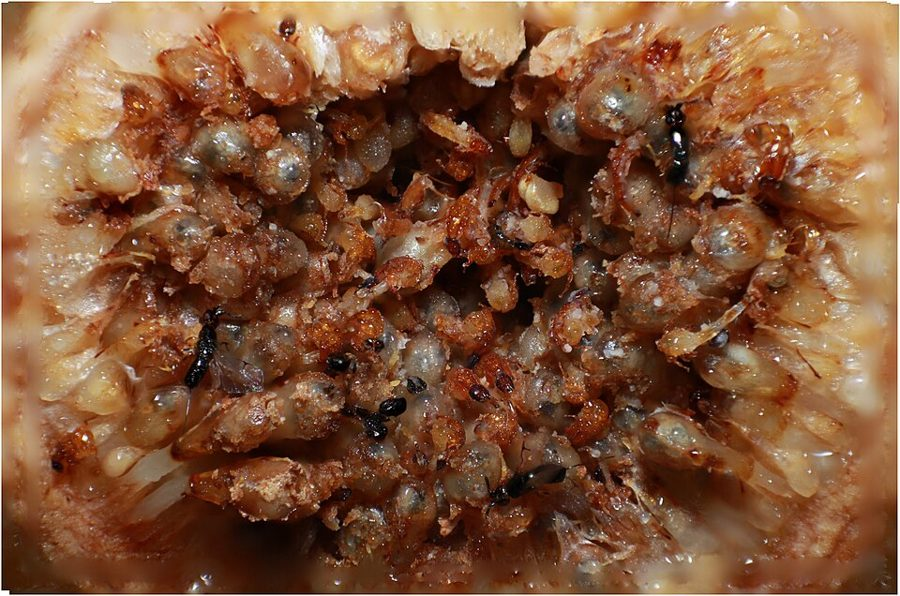

succumb to envy
… nearly all players succumb to envy …
抵不住嫉妒
envy 在这里是阿克塞尔罗德的术语：追求比对手多，而不是从银行家那里多拿。不是日常的「眼红」那么宽。
第 12 章的后半。上半页在电脑里让针锋相对和别的策略比了几轮；这半页问：电脑里的「善良、宽容、不嫉妒」，到了电脑外面还成不成立，要什么条件。作者先分清零和与非零和，拿离婚律师和 1977 年的一场足球赛作例子；再讲合作离不开「未来的阴影」，用一战西线的默契停火作长篇实例；最后推到不会思考的细菌、无花果、海鲈和吸血蝙蝠。读的时候抓两条线：合作要满足哪几个条件；为什么「策略」不需要意识。
上半页（12a）停在第 60 段：针锋相对严格说不是 ESS，却有一种「更高的稳定性」，靠亲属扎堆能单向翻过决胜点。第 61 段接着补上阿克塞尔罗德的又一个形容词「不嫉妒」，从这里起全章由理论转向实例。前后呼应先记住三处：第 67 段说律师像「待会儿就要见到的吸血蝙蝠」；第 94–95 段的细菌和无花果出自第 42 段讲过的阿克塞尔罗德和 Hamilton 的合写论文；第 73 段的「nice guys may finish first」回扣章名和第 1 段。
电脑锦标赛里「好人先到终点」的结论，搬到人、动物、植物身上，要满足哪些条件？
读的时候带着这几个问题。不用先找答案，读完回来对照「检查一下理解」。
这半页是全章从理论走向实例的一段，走法是「补一个条件，配一个例子」，反复几次。§6 先补形容词「不嫉妒」，引出零和与非零和，接着岔进一大段挖苦离婚律师的话，到第 69 段作者自己收住：这些问题只提不答。§7 用一场足球赛把同一对概念演一遍，落到「自然常常扮银行家」。§8 补第二个条件：博弈要重复、终点要未知，先用倒推讲清终点已知会怎样，再转述阿克塞尔罗德讲的一战战壕，中间夹着好几段士兵回忆，读的时候分清谁在说话。§9 是转折：策略按行为定义，用不着意识，于是一步跨到细菌、植物和鱼。§10 从献血绕到吸血蝙蝠，以一个「新神话」收尾。
作者落在哪：只要局是非零和的、还会一次次再见、谁也不知道哪一次是最后一次，善良而不嫉妒的策略就划算；策略看行为不看动机，所以这个结论也能推到没有意识的生物身上，包括吸血蝙蝠。
这一页是原书第 12 章的第 6–10 节。原书各章没有小标题，粗体的节名是本站起的，下面是这一节第一段开头的几个词，在电子书里搜它就能跳过去。读完打个勾。
先把这一页用到、作者默认你懂的几个概念讲一遍。讲的是概念本身，作者拿它推出什么，读原书时自己看。上半页讲过的囚徒困境、针锋相对、善良、宽容、不嫉妒、集体稳定与决胜点，还有第 10 章的相互利他行为，点进去看。
博弈论里的一种分法。零和：一方所得正好是另一方所失，双方得失加起来总是零（或总是同一个数），下棋、球赛的胜负、牌桌上赌钱都是。非零和：双方得失的总和不固定，可以一起多拿（做买卖、一起把开源项目做好），也可以一起吃亏（价格战）。囚徒困境是非零和的：有个「银行家」往外付钱，两人都合作，能从他那里一起多拿。要分清两件事：一局「实际上」是零和还是非零和，和玩的人「当它是」什么。打个比方：两个团队抢同一笔固定的奖金是零和；两个团队一起把系统做稳、让公司多赚、奖金池跟着变大，是非零和，可要是大家只盯着「我比你多拿多少」，照样会玩成零和。
在这一页：第 62 段给出定义。第 65–69 段的离婚律师、第 70–73 段的足球赛，讲的都是同一局被「当成」零和还是非零和。
阿克塞尔罗德的说法：「以后还要再碰面」这件事，在今天的决定里占多大分量。博弈论里常用一个数 w 来表示：这一回合之后还有下一回合的概率。w 接近 1，将来的回报和报复就很值钱，今天背叛占的那点便宜不划算；w 很小，就和只玩一次差不多。阿克塞尔罗德证明过一个门槛：w 够大时，针锋相对挡得住各种背叛者；用他比赛的计分（背叛的诱惑 5、相互合作 3、相互背叛 1、受骗 0），门槛是 w 至少 2/3，也就是平均还要再碰两次以上（这个数是本站按他的公式算的）。打个比方：在一个只用一次的小号上坑人，和在用了十年、人人认得的账号上坑人，代价完全不同。要紧的不光是还有多久，还有终点能不能预料，见下一块。
在这一页：第 74 段引出这个说法，第 75–76 段说现实里玩家会一直估计还剩多久；第 78 段拿它解释战壕里为什么长出了默契。
从最后一步往前推的推理。两人都知道正好打 100 回合：最后一回合没有以后，等于只玩一次，理性的人会背叛；既然最后一回合横竖是背叛，第 99 回合也就没有值得争取的以后，也背叛；第 98 回合同理……一路推回第 1 回合，从头到尾都背叛。这个结论要两个前提：两人都严格理性，并且都相信对方严格理性。它也说明了为什么理论家讲重复囚徒困境时，总假设终点不可预料。真人在实验里并不这样从第一回合就背叛，见「对照今天」。
在这一页：第 74 段。注意段里第二个「100th」是排印错误，那里说的是倒数第二回合，应为第 99 回合。
按在书里出现的顺序排，标题前是节号。只讲到读懂这一页需要的程度。
第 64 段那一行出自莎士比亚的历史剧《亨利六世》中篇第四幕第二场。说话的是屠夫 Dick，他跟着叛乱头目 Jack Cade，Cade 正许诺推翻法律秩序，Dick 接口说第一件事就是杀光律师。这句常被单独拿出来挖苦律师。作者在第 63 段说，「一路笑到银行」的说法让他想起这行台词，第 68 段的「莎士比亚的办法」指的就是它，是玩笑。第 64 段是引文，不是作者的话。
书里写的是 1977 年 5 月 18 日，星期六。按今天能查到的记录，这场球在 1977 年 5 月 19 日，是星期四晚上，在考文垂的主场 Highfield Road。开球推迟了（报道多说是场外交通拥堵，推迟了几分钟各处说法不一）。同时进行的另一场，桑德兰客场 0 比 2 输给埃弗顿，最后降级的是桑德兰。比分 2 比 2 时传来这个消息，后几分钟双方不再进攻。书里说是「考文垂的球队经理」把消息打上大屏幕；后来的报道多说是俱乐部的掌门人 Jimmy Hill 授意公布的（他当时的头衔各处写法不一）。桑德兰抗议，联赛调查后结果维持。故事的骨架和书里一致。
Tony Ashworth 是历史学家和社会学家，1980 年出版《战壕战 1914–1918：自己活，也让别人活的体系》，根据士兵的日记、书信和部队档案，研究西线上不成文的互不攻击默契。阿克塞尔罗德 1984 年的书《合作的进化》拿它作重复囚徒困境的现实例子，作者在第 77–91 段转述的是阿克塞尔罗德的分析。读的时候分清说话的人：第 82、85、88、90 段是亲历者的回忆；第 86、91 段引号里是阿克塞尔罗德的评语；第 86 段末尾称赞那个德国兵的一句，才是作者自己的话。

第 42 段讲过，作者写信让阿克塞尔罗德去找同在密歇根大学的 W. D. Hamilton，两人 1981 年在《科学》上发表《合作的进化》，得了美国科学促进会的纽科姆·克利夫兰奖。第 94–95 段的细菌和无花果例子都出自这篇。无花果其实是一个包着花的囊，花开在里面，只有专门的榕小蜂能钻进去传粉；雌蜂钻进去，在一部分小花里产卵，幼虫吃这些花长大；同时它给另一些花授粉。所以对蜂来说，「背叛」就是卵产得太多、粉授得太少。
书里说的「海鲈」，是 Eric Fischer 1980 年在《动物行为》上发表的研究对象：加勒比珊瑚礁上的黑色汉姆雷特鱼，属鮨科，英文俗称里归在 sea bass 一类。它同时雌雄同体，一条鱼身上卵巢、精巢都有，但每次产卵只当一种角色。Fischer 观察到，两条鱼配对后把一窝卵分成好几小份，轮流产卵、轮流授精，Fischer 叫它「交换卵子」。作者在第 96–97 段拿它当针锋相对的例子：卵比精子贵，谁都想多当雄性，轮流就是互相盯着。
Gerald S. Wilkinson 是研究蝙蝠社会行为的生物学家，1978–1983 年在哥斯达黎加野外观察普通吸血蝠，1984 年在《自然》上发表《吸血蝙蝠的互惠分食》。书里的数字都来自这篇：野外看到 110 次吐血喂食，77 次是母亲喂自己的幼崽；圈养实验里把来自相隔很远的两个洞的蝙蝠混养，每次饿一只再放回去，13 次喂血有 12 次来自同一个洞的「老朋友」。社群里一起栖息的是雌蝙蝠，所以第 101 段用「她」。
按节排，每节前面是分节地图里的节名。标着「每个字都认识」的，是熟词生义、习语和反话，最容易读错。灰色的那几个字是原句里的位置，在电子书里搜它就能找到。
对着中译本（40 周年增订版）读的时候看这一节。下面是译本这几节里会让人读错的地方：灰字是英文原文那一处的几个词，在英文电子书里搜它；方框里是译本的原句，在译本电子书里搜它。措辞别扭但意思没错的不收。全书的勘误汇总在译本勘误。
… until recently, in all fifty states …
译本：「还有今天美国几乎50个州中」
原文说：英格兰，以及直到不久以前美国全部五十个州，律师的职业规范都不许一位律师同时代理离婚的双方。译本把「直到不久前」译成了「今天」，把「全部」译成了「几乎」。
… some lawyers play exactly the opposite role …
译本：「只要律师以完全相反的方式工作」
原文是作者补的一句公道话：确实有些律师反其道而行，劝想打零和官司的客户去庭外和解。译文译成了「只要律师……就可以……」的条件句，作者的这点让步就看不出来了。
… which aspects of life do we …
译本：「我们应该在生活的哪些方面追求零和博弈」
原文强调：哪些局是零和，和我们把哪些局「看成」零和，是两回事（perceive 原书是斜体）。整段问的是人会不会把非零和的局误当成零和来玩，不是该去追求哪一种。
… Think, for instance, about wage-bargaining and …
译本：「当我们和老板对工资讨价还价时」
原文说的是工资谈判和 differentials，即不同工种之间的工资差距：工人争的是比别人多，还是一起把实际收入做大。译本漏了「差距」，又加了「和老板」，嫉妒的对象就从别的工人变成了老板。
… are also normally zero sum games …
译本：「爱尔兰橄榄球则一直是非零和博弈」
原文括号里说：英式橄榄球、澳式、美式、爱尔兰式这些也叫 football 的球赛，通常也是零和的。译文译成「一直是非零和」，正好反了。另外 Irish Football 多指盖尔式足球，不是橄榄球。
… was the last day of that …
译本：「1977年5月8日是本赛季的最后一天」
原文写的是 5 月 18 日，译本成了 5 月 8 日。两个都不对：按今天能查到的记录，这场球在 1977 年 5 月 19 日，星期四（见「书里的人和研究」）。
… Two of the three relegations from …
译本：「甲级联赛中3个保级名额中的2个已经被确定」
原文是：三个降级名额里，两个已经确定，第三个要在桑德兰、布里斯托尔、考文垂三队中产生。译本把「降级」译成了「保级」，意思反了。
… Some brilliant goals from both sides …
译本：「赛前双方各自定下的2个进球的目标」
原文说：双方都踢进了漂亮的球，到第 80 分钟比分是 2 比 2。没有什么赛前目标。
… needed in order to avoid relegation …
译本：「一个平局足以让双方都能逃避保级的命运」
原文是平局就足以让两队都免于降级。「保级」是留在甲级，是两队想要的结果；「逃避保级」说反了。这一章的「保级」都按「降级」理解。
… Nature often plays the role of …
译本：「社会扮演了“银行家”的角色」
原文主语是自然（Nature），这一段说的是人类以及动植物的生活。同段后面的「一个基本上自私的世界」也被译成了「自私的人类世界」。作者在这里要推到整个生物界，不是只讲人类社会。
… nice guys may finish first …
译本：「好人确实有好报」
原文是 may，而且限定在阿克塞尔罗德对 nice 的技术用法上（从不先背叛）。译本把「可能」变成了「确实」，又把技术术语读成了道德上的好人。
… In Axelrod’s haunting phrase, the …
译本：「用阿克塞尔罗德艰涩的用语来说」
haunting 是挥之不去、令人难忘，作者在称赞「未来的阴影」这个说法，不是说它难懂。顺带一提：这一段英文版第二个「100th」是排印错误，译文译成「第99轮」是对的。
… within rifle range behind their own line …
译本：「在英军前线来复枪射程内散步时的惊讶」
原文说：德国士兵在他们自己的防线后面走来走去，离英军只有一枪远，英军却视而不见。不是走到了英军的前线里。
… Provided, that is, that the situation …
译本：「这种情况已经类似于一场囚徒困境的博弈了」
原文是个条件：前提是，那时的局面确实相当于囚徒困境。下一段作者才去检查得失的排序。译本把条件译成了断言，第 79–80 段的论证就成了多余的。
… unlikely to be materially affected by what …
译本：「并不太可能从物质上极大地惠于个人」
原文：整场战争的结局，几乎不会因为一个士兵做了什么而有实质改变。这正是「赢得战争」不进入士兵个人选择的理由。materially 是「实质上」，不是「物质上」。
… Three Tits for a Tat, for …
译本：「三次“针锋相对”在一个区域同时形成」
原文是一种策略的名字：对方打一下，还三下。据当时的一份记载，有一段战线上长出的就是这种。不是「针锋相对出现了三次」。
… three for every one of ours …
译本：「我们也许没有一个人可以回去」
这段士兵回忆说：枪榴弹落进战壕能炸死八九个人（译本作 9~10 个）；我们不轻易用，因为德军的报复办法是我们打一发，他们回三发。译本把「回三发」译成了没人能回去，上一段的「三报还一报」就对不上了。
… seem ever to have been satisfactorily answered …
译本：「这一机制也能圆满地回答」
原文：为什么头两颗原子弹被用来摧毁两座城市，而不是像射灭烛火那样作一次示威，似乎从来没有得到令人满意的回答。译本说这套机制「能圆满回答」，意思正好反了。
… goes well beyond a merely instrumental …
译本：「仅将责任推卸给机械，有效阻止了报复」
原文：这次道歉远远超出了单纯为防止报复而做的努力，它表达了辜负信任的道德歉意。译文译成「推卸责任、阻止报复」，正好丢了要点。译本还把段末作者自己的一句称赞也放进了阿克塞尔罗德的引号里。
… In fact it was not …
译本：「事实上它无法这么做」
原文：这套默契本可以通过谈判达成，事实上却不是这样来的。译本的「无法」把一个事实陈述变成了「做不到」。同一处后面还漏了一句：士兵们大概几乎没意识到默契正在形成。
… by a very nasty man. And …
译本：「程序员也许有其他的想法，但这并不相关」
这一句后面原文还有两句：一个善良、宽容、不嫉妒的策略，完全可以由一个非常坏的人编进电脑；反过来也一样。这两句正是「善良看行为不看动机」的例证，译本没有译。
… nature should sometimes set up games …
译本：「唯一条件是自然优势需要设定」
原文列了三个条件：自然界有时会摆出囚徒困境的局；未来的阴影要长；局要是非零和的。译本的「自然优势」原文没有，「有时」也丢了，三个条件读不出来。
… but usually keep themselves in check …
译本：「细菌是否有所收获，同时也不停检验其回报呢」
原文问的是：细菌本来也许能多捞一些，平时却克制着自己？这正是「背叛的诱惑」平时被未来压住的意思。译文译成「不停检验回报」，看不出克制。
… an unconscious rule of thumb which …
译本：「首要任务是以生物化学来维系生命」
原文：一代代的选择大概在细菌身上造出了一条无意识的经验法则，靠纯生化的方式起作用。重点是「规则是选择编进去的，不是算出来的」，和「维系生命」无关。presumably（大概）也丢了。
… may even take revenge, again obviously …
译本：「但它们懂得复仇」
原文是 may even：按阿克塞尔罗德和 Hamilton 的说法，植物甚至可能「报复」，当然是无意识的。译本去掉了「可能」，又用「懂得」带出了意识。
… laying eggs in too many of …
译本：「使得它们无法互相授粉」
原文：对一只榕小蜂来说，背叛就是在一个果里的太多小花里产卵、给太少的花授粉。译本说成产卵使花「无法互相授粉」，看不出这是一笔多拿少给的账。
… And it is plausible that they …
译本：「这个博弈正是一个真正的囚徒博弈」
原文：它们打针锋相对是说得通的，因为这局「看来」确实是一个囚徒困境，只是复杂一些。作者用了 plausible 和 does appear 两层限定，译本说成「正是」。
… Be that as it may, blood-sharing …
译本：「这是因为吸血蝙蝠之间的血液共享刚好符合」
原文是转话题：献血的事先不论，吸血蝙蝠的分血倒是很合阿克塞尔罗德的模型。译本凭空加了因果，读着像蝙蝠证明了献血是纯粹利他。
… the luck may run the other …
译本：「第二天晚上，同样的故事又在上演」
原文：换一个晚上，运气可能倒过来，今天吃饱的明天可能空手。这正是互惠划算的前提。译本说「同样的故事又上演」，看不出谁幸运谁倒霉会轮换。
… she would benefit slightly, if she …
译本：「雌蝙蝠可以受益更多」
原文：在吃饱的晚上，要是能不受惩罚，不给血会让她稍微得点好处（slightly）。这和前面「同样的血对饿的一方更珍贵」配成一对，正是囚徒困境的排序。译本的「受益更多」把分量说反了。
… I am sceptical of all myths …
译本：「我对于这些神秘事件嗤之以鼻」
这一段的 myth 都是「神话、流行的寓言」：吸血鬼的神话、自然弱肉强食的神话、作者想换上的「分享与合作的新神话」。译文译成「神秘」「神秘事件」，整段的对照就散了。
… nature red in tooth and claw …
译本：「蝙蝠天生鲜红的牙齿和爪子」
原文是丁尼生的诗句，指弱肉强食、牙爪带血的整个自然界，是维多利亚时代的另一个「神话」。不是在描写蝙蝠的牙和爪。
… not only is blood thicker than …
译本：「血并不浓于水」
原文：对蝙蝠来说，不只是血浓于水（亲属互助），它们还超越亲缘，结成忠诚的血盟兄弟。译文译成「血并不浓于水」，把亲属互助那一半否掉了，和前面「多数喂血发生在亲属之间」矛盾。
Without departing from the fundamental laws of the selfish gene, we can see how cooperation … can flourish even in a basically selfish world.— §7 第 73 段。本站译：不必离开自私基因的基本法则，我们就能看出，合作……怎样在一个基本上自私的世界里也兴旺起来。
这是第 12 章想交给读者的那句话，也是全书最常被忽略的一面：书名说基因「自私」，可作者花了一整章证明，从自私的基因长出合作是顺理成章的事。关键词是 without departing：不用为合作另找「为了群体」的解释。要注意两个限定：这里的「合作」是阿克塞尔罗德模型里的合作，需要非零和、未来够长等条件；下一句他说的是好人 may 先到终点。
A strategy’s niceness is recognized by its behaviour, not by its motives (for it has none) nor by the personality of its author— §9 第 92 段。本站译：一个策略善良与否，看它的行为，不看它的动机（它没有动机），也不看写它的人是什么性格。
这句是认真下判断，也是全书方法的总纲：「自私」「善良」「报复」都是按行为下的定义。读者常把 nice guys 读成道德上的好人，把 selfish gene 读成有私心的基因，两个误读出自同一个地方。括号里的 for it has none 是关键：策略没有动机，所以细菌、无花果也能有「策略」。
读完这一页的几节再看。下面是作者在这几节里的论点，由本站按论点重新组织，不按原书的顺序；每条下面是依据所在的段落，拿不准就回书里那几段再读一遍。
针锋相对只在报复时背叛，单局里最多和对手打平，却总能一起拿高分；这只在非零和的局里管用。作者认为现实里许多局是非零和的，自然常扮银行家，所以不离开自私基因的法则，合作也能兴旺，按阿克塞尔罗德的用法，好人「可能」先到终点。
§6 第 61–62 段，§7 第 73 段作者说实验里的真人几乎都屈从于嫉妒。他挖苦离婚官司对夫妻是零和、对律师是非零和，也承认有律师劝人和解；工资、议会这些他明说只提问。足球赛反过来演示：一条场外消息就能把零和变成非零和。
§6 第 61、65–69 段，§7 第 70–72 段两个严格理性、又都知道还剩几回合的人，会从最后一回合倒推，只能背叛；所以理论家总假设终点未知。现实中玩家会估计还剩多久，估得越长越善良宽容。一战西线上，同一批对手要对峙几个月、调防无法预料，局面又合乎囚徒困境的排序，于是长出了针锋相对一类的默契：报复的本事要时时亮出来，宽容能止住冤冤相报。
§8 第 74–81、83–84 段战壕默契是互相回应行为长出来的，不是谈出来的；程序的善良也由行为定义。作者由此断言，阿克塞尔罗德的乐观结论也适用于自然，条件在生物界「肯定」处处满足；具体例子却多带「也许」：受伤者体内的细菌也许是在背叛，无花果甚至可能报复，海鲈「看来」在打针锋相对。
§9 第 92–97 段作者倾向于把英国的无偿献血看作纯粹的利他，自己说也许天真。吸血蝙蝠则合乎阿克塞尔罗德的模型：多数喂血在亲属间，但非亲属之间也有，而且多是常同栖的伙伴；按血换算成存活时间，得失「似乎」合乎囚徒困境；它们认得老朋友。他说自己怀疑一切神话，若非要一个，蝙蝠可以预示：即使基因掌舵，好人也能先到终点。
§10 第 98–104 段合起来：上半页在电脑里得出的结论，这半页给它配上了走出电脑的条件：局是非零和的，未来够长而终点不可知，策略只看行为。条件满足的地方，作者说，自私的基因用不着另找理由就能造出合作者；这是他 1989 年给全书加的一个乐观的注脚。
第 12 章合起来：作者用阿克塞尔罗德的工作重讲第 10 章的互惠。单局囚徒困境里背叛是唯一理性的选择；重复的局里，两次电脑锦标赛和按自然选择方式跑的「第三轮」，都是善良、宽容的针锋相对领先，但名次取决于场上有谁。按 ESS 的标准它严格说不是 ESS，只是「集体稳定」，和永远背叛各占一个稳定点，中间隔着决胜点，亲属扎堆能让它单向翻过去。下半章给结论配上条件（非零和、未来够长且终点未知、策略看行为），再推到人、细菌、植物、鱼和吸血蝙蝠。章名里的「好人」是这个技术意义上的好人。
这本书 1976 年出版。下面挑出这一页里能被后来的研究检验的说法，分「书里 / 当时 / 今天」三栏，并给一个结论。结论判的是标题里「书里的说法：」后面那一句。全书的这一节汇总在对照今天。
读完作者的论点，再看它站不站得住。每一块摆出三样：主流怎么看，作者怎么看，本站的评论。最后一句是本站对这一页的总体判断。
主流看法：人确实在意相对位置：Solnick 和 Hemenway 1998 年的问卷里，约一半人宁愿实际收入少一半，只要比别人高。但人也不是一味嫉妒，实验里只要「未来」够长，合作会明显增多（见对照今天）。
作者的看法：心理学实验里几乎所有玩家都屈从于嫉妒；离婚官司被律师的规矩拖成零和；工资、议会这些他只提问（第 61、65–69 段）。
本站的评论：分清「这局实际是什么」和「大家当它是什么」，是这一页最好用的工具，值得带走。离婚律师那几段是作者的杂文和讽刺，没有给数据，「几乎所有人都嫉妒」也没注出处，读的时候当观点看。还有一点他没展开：规则能改变一局的「和」。英格兰和威尔士 2022 年 4 月起实行无过错离婚，夫妻可以联名申请，等于把这局往非零和那边推了一把。
主流看法：用博弈论描述没有意识的生物，是演化生物学的常规做法，ESS 本来就这样用。但要说一种现象「是」囚徒困境，得测出各方的得失。榕树的制裁后来有了实验，却只在一部分物种里成立（Jandér 和 Herre 2010）。
作者的看法：策略按行为定义，程序没有意识也能按策略行事；条件在生物界「肯定」满足（第 92–93 段）；细菌、无花果、海鲈却带着 perhaps、may、it is plausible（第 94–97 段）。
本站的评论：按行为定义策略，这一步站得住，也是全书一贯的方法。弱的是从「可以这样描述」跳到「处处满足」：例子里只有蝙蝠给了得失的数据，还是从体重间接换算的；受伤后细菌「背叛」是推测，本站没有查到专门检验它的研究；海鲈是「看来」。读这几段，把第 93 段当作者的信心，把例子当有待检验的假说，作者自己的限定词已经提示了这一点。
主流看法：社会学家 Titmuss 1970 年的《礼物关系》以英国的无偿献血为例，主张不靠钱的献血制度运转得更好。演化理论给了另一种可能：Nowak 和 Sigmund 1998 年提出间接互惠，帮助别人能换来好名声，好名声让别人更愿意帮你。
作者的看法：很难相信答案在于互惠或伪装的自私，献血者既没有优先输血，也没有小金星；也许天真，但他倾向于看作真正纯粹、不求回报的利他（第 98 段）。
本站的评论：值得注意的是说这话的人：写《自私的基因》的人承认人类可以有纯粹的利他，这和书名最常见的误读正相反，也和他在第 11 章末说人能反抗复制因子一致。不过他只说了倾向，没有给论证，别把它当结论。他说没有小金星，等于在排除「名声」这条路，这一点可以检验，可惜他没有展开。
本站的总体看法：这一页最值得带走的是三个条件：非零和、未来够长又不知终点、策略看行为不看动机，后来的实验大体支持。要打折扣的是第 93 段「处处满足」那句断言，以及离婚律师、原子弹、工资这些作者自己说只提问的引申。吸血蝙蝠后来有了更大的实验，互惠是真的，只是更像长期关系，不像按回合记账。
先在心里答，再点开。答错的那题，回书里把对应那一节再读一遍。
它只在报复时背叛，所以单局里最多和对手打平；但它和大多数对手都能一直合作，每一局都拿到较高的共同分。比的是从银行家那里拿了多少，不是赢了几个对手。
夫妻被分到对立的两边，一方所得被当成另一方所失。两位律师都从同一对夫妻的钱里收费，官司拖得越久两人赚得越多；他们靠「各自独立」这条规矩，不用商量就配合上了。
桑德兰输球的消息。此后平局对两队都意味着保级，两队有了同一个想要的结果，就像突然冒出一个给双方都付钱的银行家。
第 100 回合没有以后，等于只玩一次，必然背叛；于是第 99 回合也没有可争取的以后，也背叛，一路倒推到第 1 回合。段里第二次出现的「100th」说的是倒数第二回合，应为第 99 回合。
双方互不开火比互相开火好；对方不打而自己打，在能逃过报复时略好；自己不打而对方打最糟。一个士兵怎么做，几乎改变不了战争的结局，却直接决定自己会不会挨枪，所以他面对的只是和对面那批人的这局。
阿克塞尔罗德的这些形容词按行为定义，不涉及动机，程序没有意识也能有策略。总的断言他说得很满（条件肯定满足），具体例子却用了 perhaps、may、plausible，还给「报复」加了引号。
圈养的蝙蝠来自相隔很远的两个洞。每次把一只饿一夜再放回去，看谁喂它。13 次喂血里 12 次来自同一个洞的老相识，作者算出纯属巧合的可能性不到五百分之一。
用一句话说这一页，写给一个没读过的人。
想一想：你所在的团队或社区里，有没有一局其实是非零和、却被大家当成零和来玩的？反过来，有没有一段合作，因为大家都知道「下个月就散了」而开始变味？
读过又忘了，从这里想起来。挑的是这一页最值得记住的模型、动物和说法，不按原书顺序；每条后面是节号，想细看就回书里那一节。全书各页的这一节都收在全书回顾。
一句话：合作用不着好心，也用不着意识，要的是：局是非零和的，以后还会再见，谁也不知道哪一次是最后一次。
离婚官司对夫妻是零和，对两位律师却是非零和：互相提对方不会接受的方案，每封信、每个电话都记进账单。作者开玩笑说，莎士比亚的办法太血腥。
§6考文垂对布里斯托尔城踢到 2 比 2，传来桑德兰输球的消息，平局让两队都保级，最后几分钟谁也不进攻。书里写 5 月 18 日星期六，实际是 1977 年 5 月 19 日星期四。
§7知道还剩几回合，最后一回合必背叛，倒数第二回合也就没了指望……合作从尾巴一路垮到开头。所以合作要「未来的阴影」够长，而且看不见终点。
§8一战西线，英军的炮每晚七点准时打同一个地方，德国兵甚至爬出来看它炸开。阿克塞尔罗德说，这种炮对上级传达进攻，对敌人传达和平。
§8吸饱血的吸血蝙蝠会吐血喂饿着的同伴。饥饿实验里 13 次喂血有 12 次给了同一个洞来的老朋友。作者说，若非要一个神话，就讲这个合作的神话。
§10